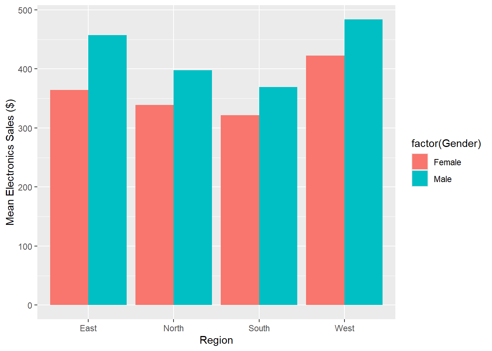

In last week’s practical we analysed a sales dataset and used one-way ANOVA tests to look for differences between means in sales across four major regions. Eventually we found some statistically significant differences between regions and found that the difference between North and South was not significant. While these results were theoretically correct, we had access to other factors that were not used. Take gender for example. Do people in the East really make larger purchases, or does one gender make larger purchases than the other and there is simply more of that gender in the East. The reverse can also be asked. If we find a difference in means between gender, is it due to gender, or the region those people are living in?
In this practical we will answer those types of questions using the two-way ANOVA test. While last week we investigated music sales across the four regions, this week we will look at electronics sales. The primary purpose of the two-way ANOVA in this scenario is to understand whether there is an interaction between gender and region on electronics sales.
We will begin by loading, visualising and summarising the sales dataset that we used last week. Remember you will need the readr package installed to load it using the read_csv function.
library(tidyverse)
Warning: package 'lubridate' was built under R version 4.4.2
── Attaching core tidyverse packages ──────────────────────── tidyverse 2.0.0 ──
✔ dplyr 1.1.4 ✔ readr 2.1.5
✔ forcats 1.0.0 ✔ stringr 1.5.1
✔ ggplot2 3.5.1 ✔ tibble 3.2.1
✔ lubridate 1.9.4 ✔ tidyr 1.3.1
✔ purrr 1.0.2
── Conflicts ────────────────────────────────────────── tidyverse_conflicts() ──
✖ dplyr::filter() masks stats::filter()
✖ dplyr::lag() masks stats::lag()
ℹ Use the conflicted package (<http://conflicted.r-lib.org/>) to force all conflicts to become errors
salesdata <-read.csv("sales.csv")
We already ran a standard summary of all the data in last week’s practical. However, now that electronics sales is the variable of interest, we can reproduce the aggregation and barplots that were created last week.
region_mean_and_se <-aggregate(Electronics_Sales ~ Region, salesdata,function(x) c(mean =mean(x), se =sqrt(var(x)/length(x))))gender_mean_and_se <-aggregate(Electronics_Sales ~ Gender, salesdata,function(x) c(mean =mean(x), se =sqrt(var(x)/length(x))))
An easy way to visualise two barplots side by side is by using the patchwork package. The patchwork package has a simple to use syntax where the user names each plot then simply adds them together using the + symbol.
# install.packages("patchwork")library(patchwork)
Warning: package 'patchwork' was built under R version 4.4.2
While a standard summary of the whole dataset was used in the previous practical, a more sophisticated summary of the data can be obtained using the doBy package. The summaryBy function of the doBy package allows us to provide a formula that we would like to summarise by, that is, the same kind of formula we would pass to the aov function. The formula is expressed the same way it has been previously, it just needs to be updated to include another factor and an interaction term. To add another factor we can simply use the + symbol, and to add an interaction term we separate two factors by a colon.
# install.packages("doBy")library(doBy)
Warning: package 'doBy' was built under R version 4.4.2
Attaching package: 'doBy'
The following object is masked from 'package:dplyr':
order_by
sB <-summaryBy(Electronics_Sales ~ Region + Gender + Region:Gender, data = salesdata)sB
Region Gender Electronics_Sales.mean
1 East Female 364.5455
2 East Male 457.1429
3 North Female 339.2308
4 North Male 398.0000
5 South Female 321.7391
6 South Male 369.5455
7 West Female 422.3077
8 West Male 483.7500
There appears to be some differences by gender across the four regions, but are they statistically significant? The two-way ANOVA test mostly makes the same assumptions as the one-way ANOVA and already saw last week how to test for normality and variance equality using the Shapiro-Wilk test and Bartlett’s test, respectively. Unbalanced designs, that is, unequal sample sizes, can sometimes be a further concern for two-way ANOVA tests. While ANOVA tests are somewhat robust to deviations in the assumption of equal variance, this robustness no longer holds when sample sizes are not equal. For us, this means that a ‘win-lose’ result is acceptable, while a ‘lose-lose’ is not i.e. We can have unequal sample sizes as long as variances are equal and we can have unequal variances as long as sample sizes are equal but we cannot have both conditions fail.
Starting with the Shapiro-Wilk test, we need to consider both Region and Gender.
Shapiro-Wilk normality test
data: salesdata$Electronics_Sales[salesdata$Gender == "Female"]
W = 0.9749, p-value = 0.03574
As was the case in the previous practical, all factors pass the Shapiro-Wilk test except for one. Here it is the Female gender, which has a p-value of 0.035, but again, due to large sample size and no severe skewing we can proceed. Next we run Bartlett’s test for equal variances.
bartlett.test(Electronics_Sales ~ Region, data = salesdata)
Bartlett test of homogeneity of variances
data: Electronics_Sales by Region
Bartlett's K-squared = 1.5233, df = 3, p-value = 0.6769
bartlett.test(Electronics_Sales ~ Gender, data = salesdata)
Bartlett test of homogeneity of variances
data: Electronics_Sales by Gender
Bartlett's K-squared = 1.1231, df = 1, p-value = 0.2893
We can see that with p-values much greater than 0.05 both factors contain equal variances among levels. As a result, we do not need to worry about whether sample sizes are equal and we can proceed with the ANOVA test. The aov function is called the same way it has been previously, with updates the same as those explained for the summaryBy function.
s_anova <-aov(Electronics_Sales ~ Region + Gender + Region:Gender, data = salesdata)summary(s_anova)
Df Sum Sq Mean Sq F value Pr(>F)
Region 3 329106 109702 25.437 6.69e-14 ***
Gender 1 194312 194312 45.056 2.10e-10 ***
Region:Gender 3 10423 3474 0.806 0.492
Residuals 192 828038 4313
---
Signif. codes: 0 '***' 0.001 '**' 0.01 '*' 0.05 '.' 0.1 ' ' 1
The above call to aov can actually be simplified by using R’s * syntax, which indicates we want to consider region, gender and their interaction.
s_anova2 <-aov(Electronics_Sales ~ Region * Gender, data = salesdata)summary(s_anova2)
Df Sum Sq Mean Sq F value Pr(>F)
Region 3 329106 109702 25.437 6.69e-14 ***
Gender 1 194312 194312 45.056 2.10e-10 ***
Region:Gender 3 10423 3474 0.806 0.492
Residuals 192 828038 4313
---
Signif. codes: 0 '***' 0.001 '**' 0.01 '*' 0.05 '.' 0.1 ' ' 1
The results show that both main effects, Region and Gender, are highly statistically significant, while their interaction is not. We can further confirm this through an interaction plot, visualising how the two factors behave together.
Q. Use the interaction.plot documentation (?interaction.plot in your console) to improve the above visualisation. Change the colour of the lines and draw a box around the legend, as well as whatever other changes you would like to make.
The interaction plot shows the different means for each group formed by the combinations of genders and regions. Means for males and for females are connected across regions. The interaction plot confirms that while there are significant main effects for gender and region, there is no significant interaction. Means for females are lower than for males in all regions, by a similar amount.
Yet another way to visualise interactions is through barplots. We can look at gender broken down by region to see that there is a similar pattern for both genders. The easiest way to aggregate the data for these barplots is again by simply updating the expression used in the aggregate function. Then we can split the data by whichever factor is required.
mean_and_se <-aggregate(Electronics_Sales ~ Region + Gender, salesdata, function(x) c(mean =mean(x), se =var(x)/length(x)))mean_and_se
Region Gender Electronics_Sales.mean Electronics_Sales.se
1 East Female 364.5455 183.4317
2 North Female 339.2308 100.5917
3 South Female 321.7391 125.1590
4 West Female 422.3077 201.3254
5 East Male 457.1429 149.9215
6 North Male 398.0000 196.8736
7 South Male 369.5455 202.3711
8 West Male 483.7500 195.5842
We can see from the barplot that there are very similar patterns for the four regions across both genders. Between the ANOVA results, the interaction plots and the barplots, we can conclude that the interaction between Gender and Region does not have a significant effect on Electronics Sales.
Q. Can you add error bars to these two plots?
To look at the opposite relationship, that is where each plot would represent a region, with gender along the x-axis and mean electronic sales on the y-axis, we could create 4 plots using the patchwork design. That would feel a bit unnecessarily tedious. Instead, we can pass the fill argument to ggplot to fill bars with colour according to Gender.
ggplot(data = mean_and_se,aes(x = Region, y = Electronics_Sales[, 1], fill =factor(Gender))) +geom_bar(stat ="identity", position ="dodge") +xlab("Region") +ylab("Mean Electronics Sales ($)")

Again, we can see that across all four regions there is a similar pattern among genders.
Q. Can you add error bars to the previous plot?
Finally, Tukey’s test should again be run as a post-hoc test. In the below output there are many lines explaining the results for interaction terms. However, recall that the interaction was not statistically significant, so these lines should be ignored.
As was the case with music sales in the previous practical, we can see that there is a significant difference between every pair of region means except for the South and North. This Tukey test also tells us that there is a significant difference between the two genders.
Q. Is it appropriate to run the same factorial ANOVA test as above using music sales? Why / Why not? Provide evidence using the data.
Have a go on your own
There is another .csv file provided with this practical, called hsb2.csv. This data file contains 200 observations from a sample of high school students with demographic information about the students, such as their gender (female), socio-economic status (ses) and ethnic background (race). It also contains a number of scores (out of 100) on standardized tests, including tests of reading (read), writing (write), mathematics (math) and social studies (socst).
Q. Perform all necessary checks of the data and perform a factorial ANOVA test to determine whether there is a statistically significant difference in average writing scores by gender and socio-economic status. Include tests for interaction. Include interaction and barplots. Interpret the results.